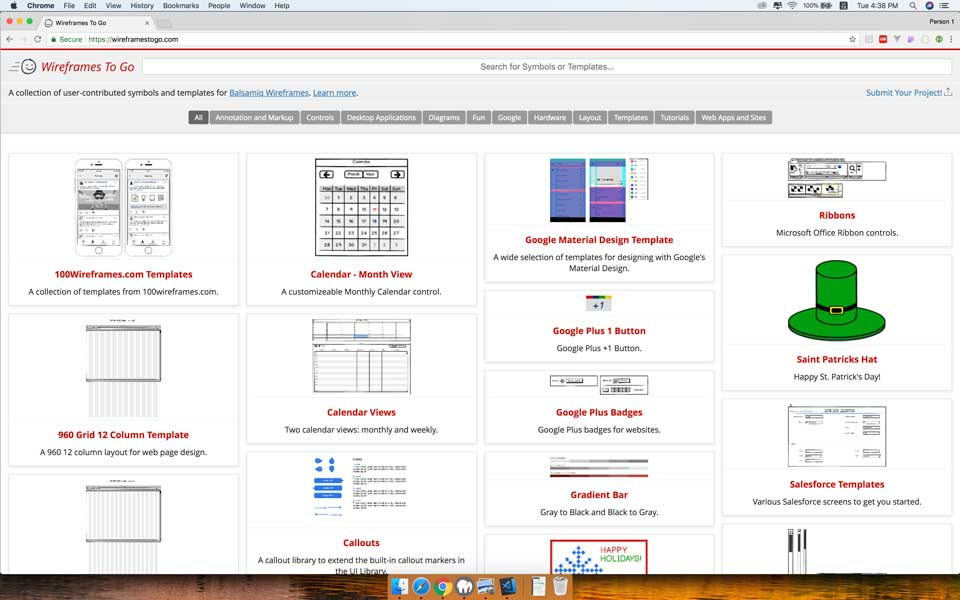
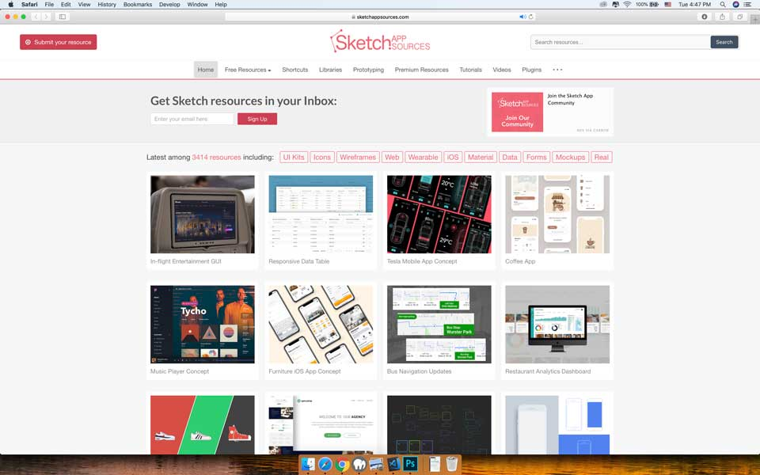
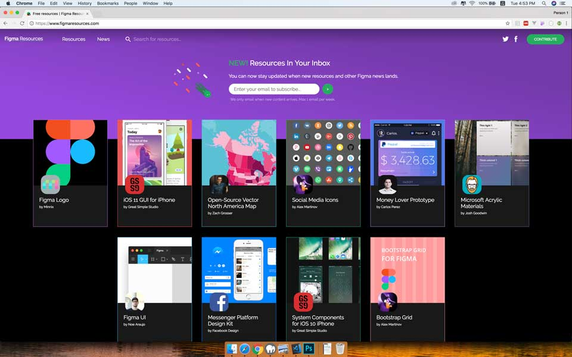
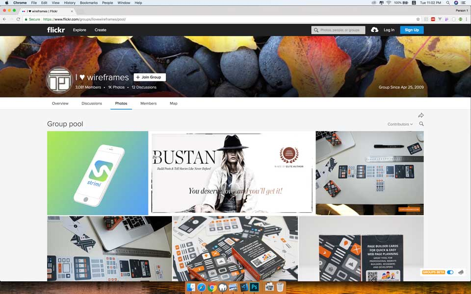
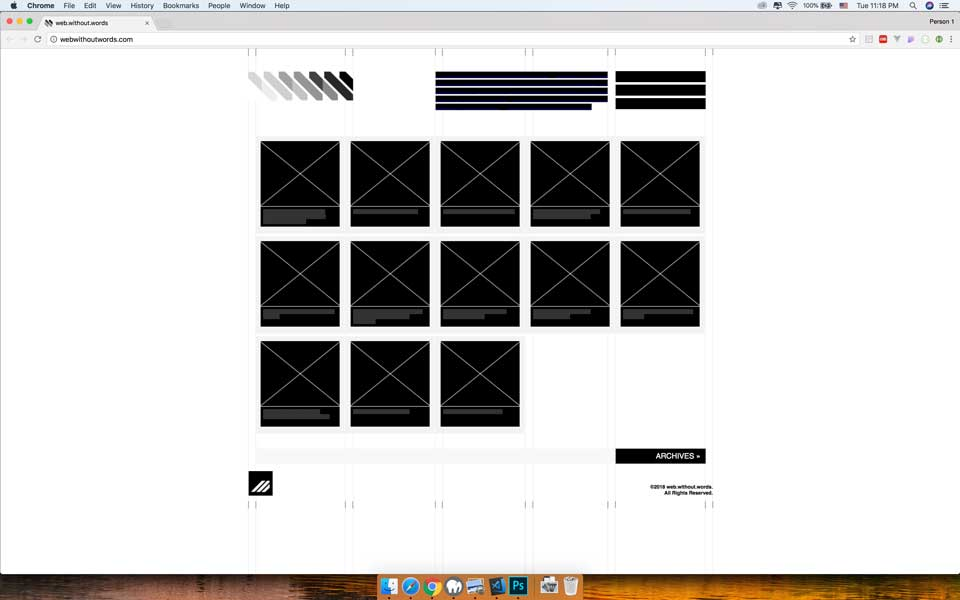

Tiếp tục loạt bài lược dịch của cuốn "The Guide to Wireframeing". Ở phần này có một số mình không tìm được nghĩa tiếng Việt tương tự nên sẽ để nguyên bản tiếng Anh.
Riêng phần này, có một số resources đã không còn nên mình có bổ sung thêm một vài resources theo xu thế hiện nay (năm 2018).
Danh sách bài viết trong loạt bài:
Trong thiết kế, có những lúc chúng ta sẽ lặp đi lặp lại một công việc nhiều lần. Do đó, những mẫu có sẵn sẽ giúp ta tiết kiệm được thời gian và công sức. Phần này, chúng ta sẽ nói về mẫu thiết kế và những thư viện có sẵn.

Cho dù bạn mới bắt đầu làm việc với wireframe hay prototype trong vài năm hoặc trong một thời gian dài, bạn sẽ thấy điều này hữu ích do luôn cập nhật các xu hướng thiết kế mới nhất dành cho web và di động. Bạn có thể tự do sáng tạo thêm, hoặc tìm cảm hứng cho sản phẩm và gắn trực tiếp vào các công cụ thiết kế như Sketch, Balsamiq,...
Bạn có thể tham khảo thêm các mẫu thiết kế mới nhất tại UXPin như Web Design Trends.
Từ này mình không biết dịch thế nào nên để nguyên. Đại khái là các mẫu thiết kế có sẵn, mình có thể import trực tiếp vào công cụ thiết kế để tiết kiệm thời gian.
Địa chỉ: https://wireframestogo.com/
Có rất nhiều mẫu thiết kế do cộng đồng đóng góp. Tại đây, bạn có thể tìm thấy vô số UI Component hoặc wireframe cho toàn bộ trang web. Lưu ý, các mẫu thiết kế tại trang này chỉ hỗ trợ cho Balsamiq Mockups.
Địa chỉ: https://www.sketchappsources.com
Có lẽ bạn đã biết nhiều về Sketch, một công cụ thiết kế phổ biến hiện nay và chỉ chạy trên Mac OS. Trang này có nhiều mẫu dành cho Web, Mobile, Wearable và icon.
Địa chỉ: https://www.figmaresources.com/
Figma là đàn em của Sketch. Về chức năng thì tương tự và có một số điểm hay hơn Sketch, hỗ trợ đa nền tảng như Mac OS, Windows và Web. Trang này cũng tương tự như Sketch App Resources.
Những mẫu thiết kế ở phần này không thể gắn vào các công cụ thiết kế. Nó có thể là hình ảnh, các mẫu dưới dạng giấy,...
Địa chỉ: https://www.flickr.com/groups/ilovewireframes
Nhiều mẫu thiết kế được cộng đồng đóng góp vào một group trên Flick.
Địa chỉ: http://www.wireframeshowcase.com/
Trang này vô số wireframe hoàn chỉnh của một trang web hoặc một phần trong một trang web, bao gồm wireframe và hình ảnh cuối cùng sau khi hoàn thiện.

Địa chỉ: http://webwithoutwords.com/
Một trang web khá thú vị, loại bỏ tất cả hình ảnh và chữ, trừu tượng các thành phần bằng các kí hiệu dùng trong wireframe.
Ngoài ra, bạn có thể tham khảo bài viết của Creative Tim, nơi có các template đơn giản nhưng đẹp đẽ từ UI đến Code. Bài viết "Why you should start using an UI Kit?" nói về tại sao bạn nên sử dụng UI Kit khi bắt đầu một dự án mới.